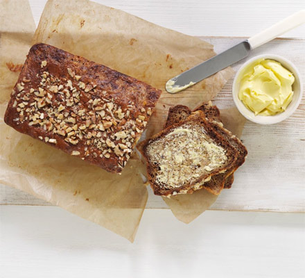
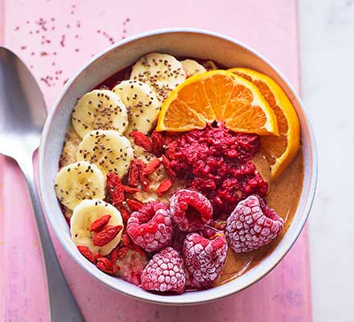
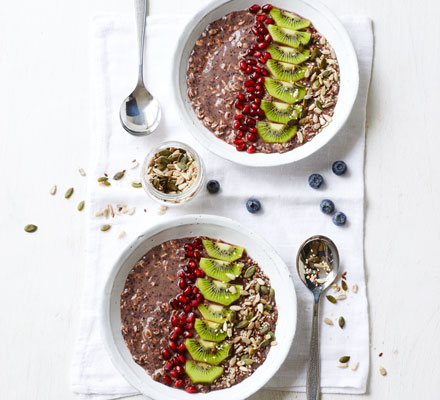
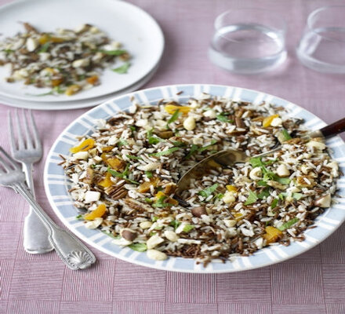
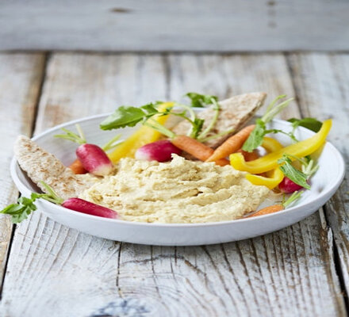

Ingredients
low-fat spread, for the tin, plus extra to serve
140g wholemeal flour
100g self-raising flour
1 tsp bicarbonate of soda
1 tsp baking powder
300g mashed bananas from overripe black bananas
4 tbsp agave syrup
3 large eggs, beaten with a fork
150ml pot low-fat natural yogurt
25g chopped pecans or walnuts (optional)
Recipe
1- Heat oven to 160C/140C fan/gas 3. Grease and line a 2lb loaf tin with baking parchment (allow it to come 2cm
above top of tin). Mix the flours, bicarb, baking powder and a pinch of salt in a large bowl.
2- Mix the bananas, syrup, eggs and yogurt. Quickly stir into dry ingredients, then gently scrape into the tin and
scatter with nuts, if using. Bake for 1 hr 10 mins-1 hr 15 mins or until a skewer comes out clean.
3- Cool in tin on a wire rack. Eat warm or at room temperature, with low-fat spread.

Ingredients
100 g frozen raspberries
1 orange, ½ sliced and ½ juiced
150 g porridge oats
100 ml milk
½ banana, sliced
2 tbsp smooth almond butter
1 tbsp goji berries
1 tbsp chia seeds
Recipe
1- Tip half the raspberries and all of the orange juice in a pan. Simmer until the raspberries soften, about 5 mins.
2- Meanwhile stir the oats, milk and 450 ml water in a pan over a low heat until creamy. Top with the raspberry
compote, remaining raspberries, orange slices, banana, almond butter, goji berries and chia seeds.

Ingredients
300ml almond milk
200g blueberries
½ tbsp maple syrup
2 tbsp chia seeds
100g jumbo oats
1 kiwi fruit, cut into slices
50g pomegranate seeds
2 tsp mixed seeds
Recipe
1- In a blender, blitz the milk, blueberries and maple syrup until the milk turns purple. Put the chia and oats in a
mixing bowl, pour in the blueberry milk and stir very well. Leave to soak for 5 mins, stirring occasionally, until
theliquid has absorbed, and the oats and chia thicken and swell.
2- Stir again, then divide between two bowls. Arrange thefruit on top, then sprinkle over the mixed seeds. Will keep
in the fridge for 1 day. Add the toppings just before serving.

Ingredients
1 x 400 g tin of chickpeas•
400 g mixed rice, such as Camargue, wild, long-grain
150 g mixed nuts
½ a bunch of fresh basil , (15g)
½ a bunch of fresh mint , (15g)
75 g dried apricots
extra virgin olive oil
Recipe
1-Cook the rice according to the packet instructions until tender. Drain, then allow to cool.
2-Roughly chop the mixed nuts, pick and roughly chop the basil and mint leaves, then roughly chop the apricots.
3-Combine with the rice, season with sea salt and black pepper, then drizzle with oil. Serve with grilled meat or fish

Ingredients
1 x 400 g tin of chickpeas
1 small clove of garlic
1 tablespoon tahini
1 lemon
extra virgin olive oil
Recipe
1- Drain and tip the chickpeas into a food processor.
2- Peel and add the garlic, then add the tahini, a good squeeze of lemon juice and 1 tablespoon of oil.
3- Season with a pinch of sea salt, then pop the lid on and blitz.
4- Use a spatula to scrape the houmous down the sides of the bowl, then blitz again until smooth.
5- Have a taste and add more lemon juice or a splash of water to loosen, if needed, then transfer to a serving bowl.
6- Serve with sliced crunchy veg, such as carrots, cucumbers, radishes or peppers, and some warm flatbreads